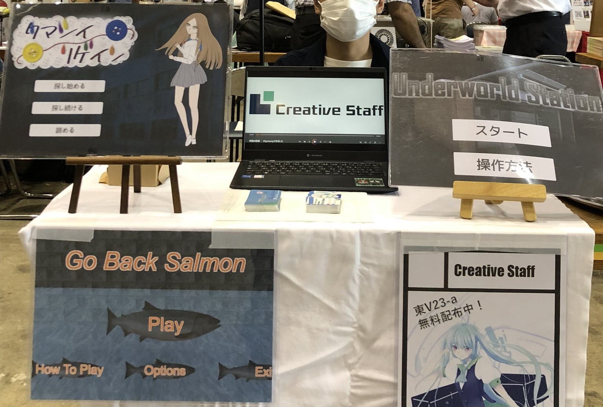

更新日： 2024年 3月 24日
お詫び、そしてCreativeStaff 2023年の軌跡
こんにちは、こんばんは、クリエイティブスタッフです。まず最初に2023/5/22の「部員登録会後の入部について」から更新情報の更新が途切れてしまい誠に申し訳ありません。
更新が途切れた理由と致しましては、Web制作班の活動が勉学やメンバーの私生活の影響で極端に減ってしまったことがあると考えております。
今後このような事が無い様に担当の割り振りや、活動状況の随時把握など対策を致しますので、今後とも何卒クリエイティブスタッフWeb制作班をよろしくお願いします。
さて、今回は2023年以来の久々の更新情報ということで、最後の更新以降の2023年にやってきた活動を一気に振り返っていこうと思います!!(別に一個一個ページ作るの面倒くさくなったわけじゃないよ?)
さて、今回は2023年以来の久々の更新情報ということで、最後の更新以降の2023年にやってきた活動を一気に振り返っていこうと思います!!(別に一個一個ページ作るの面倒くさくなったわけじゃないよ?)
C102の記録
 まず部員登録会の後の大きなイベントとしてコミックマーケット102への参加がありました。
今回のコミケではなんと!! 新しいサークルカットでの参加になりました!! こちらはサークル内でサークルカット募集大会という大会を開催した結果、堂々の1位でサークルカットに選ばれた厳選されたイラストになっております。 この大会で集めたその他のイラストについても今後なにかに使用する可能性もあるのでお楽しみに。
第19回紅華祭の記録
コミケが終わり夏休みが終わると間もなく我らが東京工科大学の文化祭、通称「
今回の紅華祭では前回の反省を踏まえてリベンジ!! 模擬店で売るものは、如何にも売れそうな
そして展示の方は講義棟Aの一室で行われました。しかも今回は新たに結成された制作班のゲームが3本に、個人制作のゲームが1本追加で開催しました。 それぞれ制作班の物が「Inheritance」「色づく灰世界」「止まるなローグくん!」、個人制作の物が「Stage Mixer」になります。 「Inheritance」はダークファンタジーな世界観の
これらのゲームの詳細についてはゲーム一覧から御覧ください。
そして結果ですが模擬店は前回に比べて大繁盛、ゲーム展示も多くの方々に訪れていただけました!! 模擬店に来てくれた方々、展示に訪れてくれた方々、どっちも行ったという方々、来てくださりそして、我々クリエイティブスタッフに興味を持ってくださり誠にありがとうございました。
まあ私は当日、展示で温々と
C103の記録?
はい
お気づきの方が居るか知らないですし「しらねぇよ」って方が大半かと思いますが（そもそもこんな記事を見てくれている人が居るか怪しいが）、
最後に
ここまで長ったらしいクソみたいな私の文章を読んでいただきありがとうございます。 途中自分語りとか入ってしまって申し訳ありません。 まあ隙を見せたあなた達が悪いってことで(そんな事は無い)
という事で今回は「CreativeStaff 2023年の軌跡」を読んでいただき本当にありがとうございます。 今後も私達クリエイティブスタッフは、皆様に楽しんでもらえる様な楽しいゲームを制作していきますので何卒よろしくお願いします。 それではまた次の更新情報でお会いしましょう。 ここまでの担当は
またね